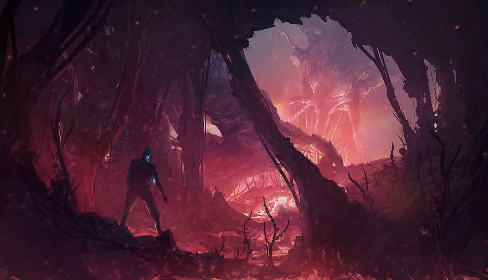

I have lived in Vietnam for 17 years before moving to the US to now become a senior Design student at WWU. Initially, I had little idea of what to talk about for this section, but I decided to talk about my favorite video games.
That being said, it's always a bit strange when people ask me "What do you think about -Name of a Trending TV show-?" considering how I'm more of a video game person than a "TV shows" person.
But then again, that's not because I hate watching TV shows, I just prefer the feeling of being imerged into an open world video game, which (arguably) has really good writing, just like a really good book or TV show.
My Instagram